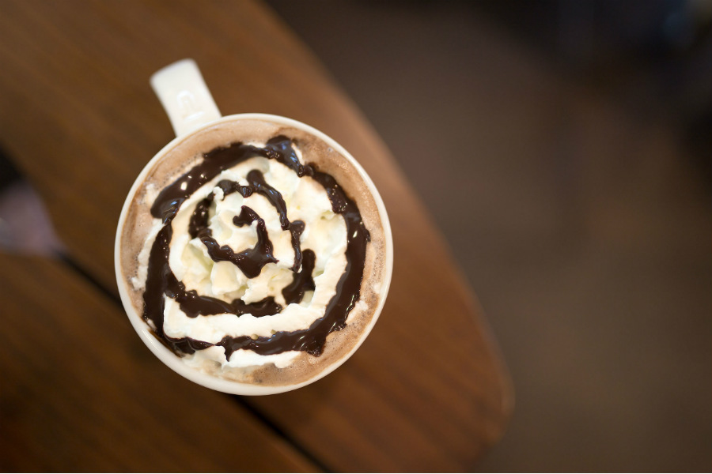
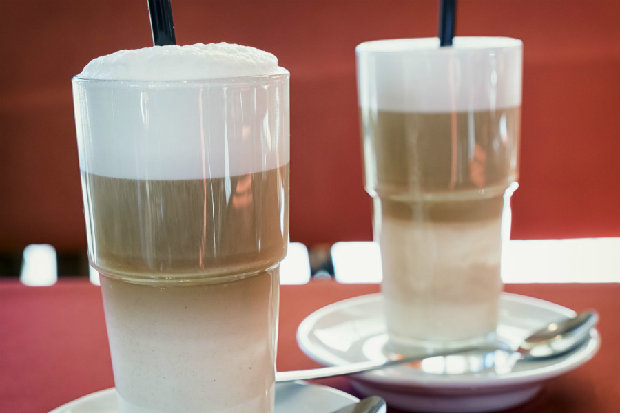
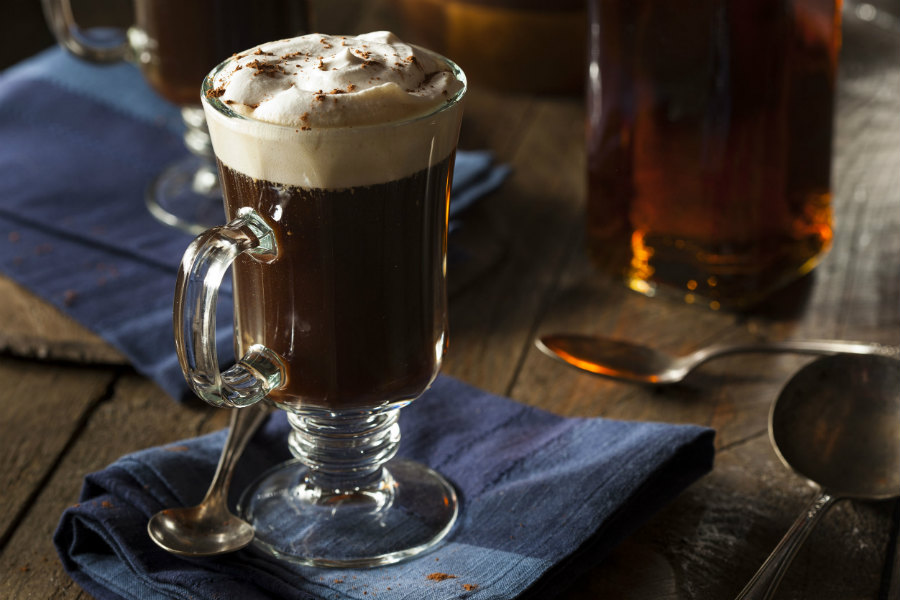

Deliciosas maneras de disfrutar el café
Café a la Nutella:
Es una de las bebidas más preferidas por todos. Caliente, dulce y cremoso, es perfecto para disfrutarse con buena compañía por la mañana. Los amantes del café y la Nutella enloquecerán con esta receta que mezcla ambas delicias en una cálida y dulce bebida irresistible.
Ingredientes
- 1/2 taza de café fuerte
- 1 taza de leche chocolatada
- 1/2 taza de crema de leche
- 2 cucharadas de Nutella
- Azúcar al gusto
Preparación
- Verter el café en una taza. Calentar a fuego medio 1/2 taza de leche con la Nutella sin dejar de remover. Cuando se disuelva, agregar la leche restante. Subir el fuego, pero sin dejar que hierva
- Batir hasta obtener una espuma abundante. Verter la mezcla sobre la taza, agregar un chorro de crema de leche, endulzar al gusto y decorar el resultado con chocolate rayado.
Latte Machiatto:
Es una bebida preparada con leche y espresso. Para avivar una tarde, amenizarla, calentarla o compartirla, nada es mejor que un café, y más si se acompaña con un suave y esponjoso bizcocho o unas deliciosas galletas.
Ingredientes
- 45 ml de espresso
- 170 ml de leche
Preparación
- Verter la leche caliente, añadir la espuma de leche y finalmente el café espresso. Gracias a las distintas densidades de los ingredientes, el café no se mezclará con la leche caliente y la espuma de leche flotará sobre el espresso. Suele servir en un vaso de cristal. Disfrute.
Irish Coffee:
Existen distintas historias sobre su aparición pero lo que es seguro es el lugar el Shannon Internacional Airport de Irlanda. La gracia de este cóctel es conseguir una bebida tricolor mezclando el café, la nata y el whisky. Preparar este café es muy sencillo.
Ingredientes
- Café espresso
- 50 ml de whisky irlandés
- Nata montada
- Azúcar, al gusto
Preparación
- Antes de preparar la bebida se debe calentar las copas. Preparar un espresso y verterlo en la copa junto con el azúcar, luego el whisky y finalmente la nata. Se suele dejar resbalar por una cuchara hasta la copa, así se consigue que flote en la superficie. Puedes espolvorear la bebida con canela. Servir en una copa de cristal.